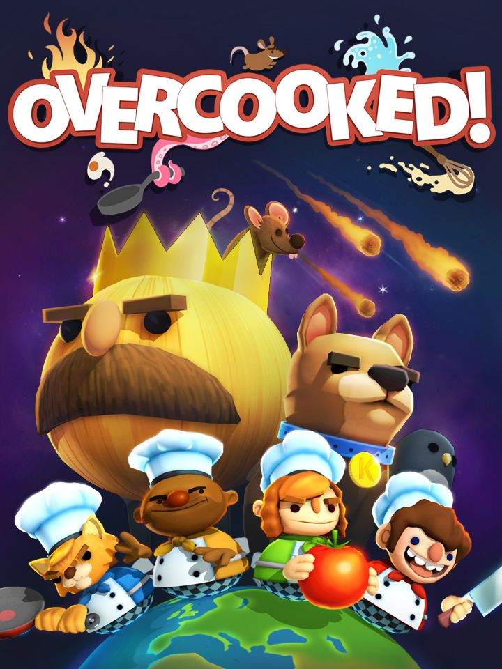

Overcooked
Overcooked
Detalhes
|  | |
| Tempo de jogo | 14m 0s |
| Última Atividade | 20/04/2020 20:29:01 |
| Adicionado | 11/02/2025 13:17:41 |
| Modificado | 11/02/2025 13:30:43 |
| Status de Conclusão | Jogado |
| Biblioteca | Steam |
| Fonte | Steam |
| Plataforma | PC (Windows) |
| Data de Lançamento | 03/08/2016 |
| Pontuação da Comunidade | 82 |
| Avaliação da crítica | 82 |
| Pontuação do Usuário | |
| Gênero | Arcade Indie Simulator Strategy |
| Desenvolvedor | Ghost Town Games |
| Editor | Team17 |
| Funções | Co-Operative Multiplayer Single Player |
| Links | Facebook Official Steam Wikipedia Wikia Epic Twitch |
| Tag | |
Descrição

Overcooked is a chaotic couch co-op cooking game for one to four players. Working as a team, you and your fellow chefs must prepare, cook and serve up a variety of tasty orders before the baying customers storm out in a huff. Sharpen your knives and dust off your chef’s whites, there isn’t mushroom for error and the steaks are high in these crazy kitchens!
The Onion Kingdom is in danger and only the finest cooking can save it! In Overcooked players must journey through a variety of cruel and unusual kitchens on their quest to become master chefs capable of conquering an ancient edible evil which plagues the land.
Play solo or engage in classic, chaotic couch co-op for up to four players in both co-operative and competitive challenge modes. You’ll have to cook a range of different dishes and work together in order to become the most effective and ultimate team!
A CULINARY QUEST
The Onion Kingdom is a rich world full of cruel and unusual kitchens for you to conquer. Take part in an epic journey and tackle an increasingly challenging and bizarre gauntlet of kitchens which will push your skills of co-operation and co-ordination to the very limits. Each level brings a new challenge for you and your team to overcome, whether it's sliding around on a pirate ship, moving between speeding trucks, cooking on an ice floe or serving food in the bowels of a fiery underworld, each level will test the mettle of even the bravest chefs.
SIMPLE CONTROLS/DEEP CHALLENGE
Overcooked is so easy to pick up that anyone can join in the fun, but finding a team who can communicate and co-ordinate their actions when the pizza hits the fan, that's when only a well-oiled team of super-chefs will come out on top!
DIFFERENT WAYS TO PLAY
Whether indulging in deep fried local co-op or sautéed single player, as you play through the game you'll unlock new levels, new chef characters and even competitive challenge levels which allow teams of two to engage in hard boiled head-to-head in the kitchen.
However you want to play, if you think you can stand the heat, then get ready to enter the kitchen!